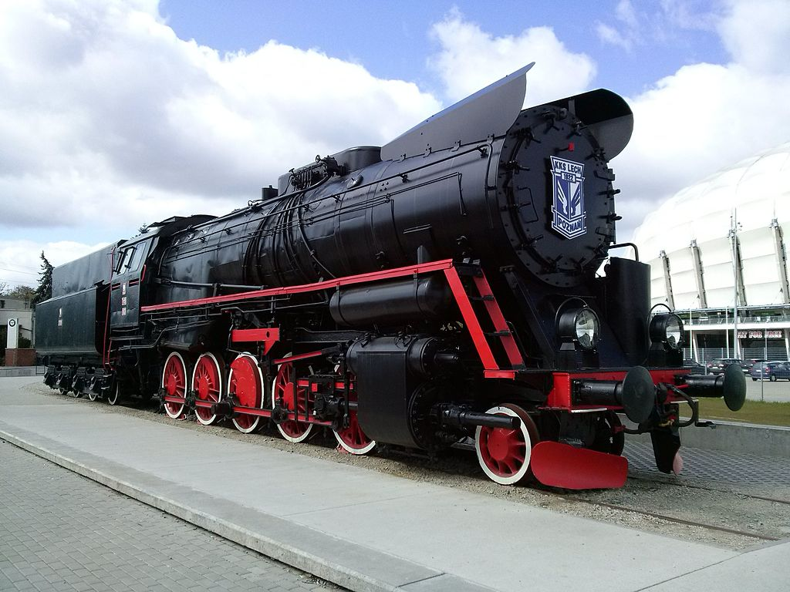
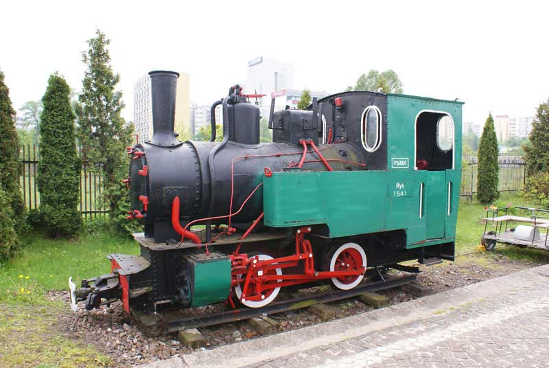
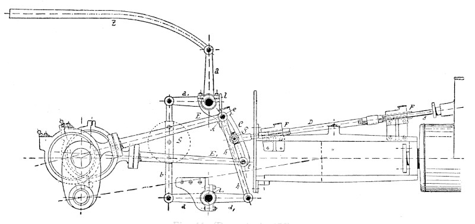

PAROWOZY
Skąd bucha para?
Para pochodzi z kotła opalanego najczęściej węglem kamiennym. Pierwszą lokomotywę parową zbudował w 1802 roku Richard Trevithick. Za wynalazcę współczesnej lokomotywy parowej uważa się George’a Stephensona. Jego parowóz Rakieta (Rocket) z 1829 r. stał się pierwowzorem wszystkich dalszych konstrukcji.
Parowóz Ty51
Był polskim, najcięższym parowozem towarowym produkowanym w zakładach HCP w latach 1953–1958. Parowozy serii Ty51 były nieco słabsze od parowozów serii Ty246 w wersji wyposażonej w podgrzewacz Worthingtona, ale przewyższały znacznie w osiągach serie Ty4 i Ty45. Na poziomym torze prowadziły ładowne pociągi o masie 2500 ton z prędkością 60 km/h lub 1160 ton przy 80 km/h przy opalaniu węglem o wartości opałowej 6787 kcal/kg. Przy ciężkich składach były ekonomiczne w zużyciu węgla i pary dzięki właściwie dobranym rozmiarom kotła i maszyny parowej, duża pojemność skrzyni węglowej umożliwiała długotrwałą pracę parowozu przy dużym obciążeniu. Główna wadą serii Ty51 było przeciążenie tyłu parowozu, różnica nacisków osi wynosiła ok. 3 ton, co w eksploatacji powodowało pękanie tylnych części ostojnic. Niedopracowany okazał się podgrzewacz wody, a łożyska osi tendra wykazywały tendencję do grzania się.
Parowóz Ty42
Ty42 jest to parowóz towarowy konstrukcji niemieckiej (znormalizowana
seria 52), budowany masowo w wielu fabrykach europejskich (w Niemczech
i krajach okupowanych, m.in. w Polsce) w latach 1942–1945, znany także
jako niemiecka lokomotywa wojenna Kriegslokomotive. Ty2/42 podczas
rozruchu rozwijał maks. siłę pociągową nieco ponad 17 000 kG (170 kN).
Opalany lepszym gatunkiem węgla mógł ciągnąć składy towarowe ładowne o
masie 620 ton z prędkością 80 km/h lub 1700 t – 50 km/h. W terenach
górskich na wzniesieniu 20‰ mógł ciągnąć składy o masie 190 ton z
prędkością 40 km/h.
Parowóz ten bywał używany do ciągnięcia składów osobowych, gdzie
pociąg o masie ok. 130 ton, składający się z wagonów 2- i 3-osiowych
mógł pokonywać wzniesienia 25‰, przy prędkości do 40 km/h.
Parowóz Ryś
Parowóz wąskotorowy, tendrzak, produkowany w Polsce od 1946 roku, przeznaczony do pracy głównie na kolejach leśnych i przemysłowych, o rozstawie szyn 600/750/785 mm. Była to wersja niemieckiego parowozu Riesa.
Parowóz mógł pokonywać łuki o promieniu 18 m. Był wyposarzony w bliźniacze silniki parowe z suwakami płaskimi, mechanizm parorozdzielczy Heusingera i hamulec ręczny dźwigniowy na obie osie, przerabiany często podczas eksploatacji na parowy. Z kolei mechanizm napędowy napędzał drugą oś.
Rozrząd Stephensona
Umożliwił ekonomiczniejszą pracę parowozu, ponieważ przy ruszaniu z miejsca zapewniał dużą siłę pociągową, która można było potem zmniejszyć odpowiednio redukując napełnienie. W ten sposób zmniejszano też ciśnienie indykowane oraz zużycie pary i paliwa.
